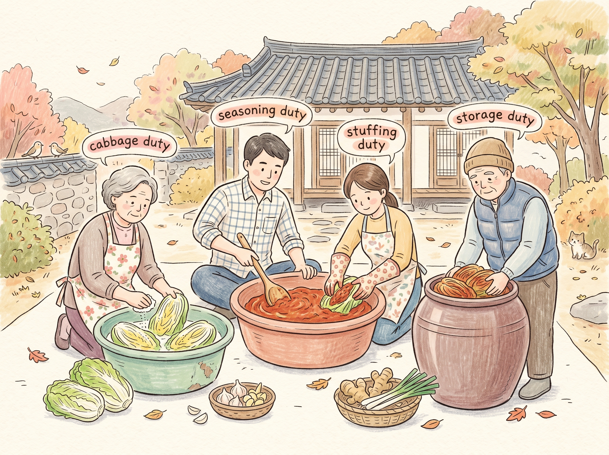
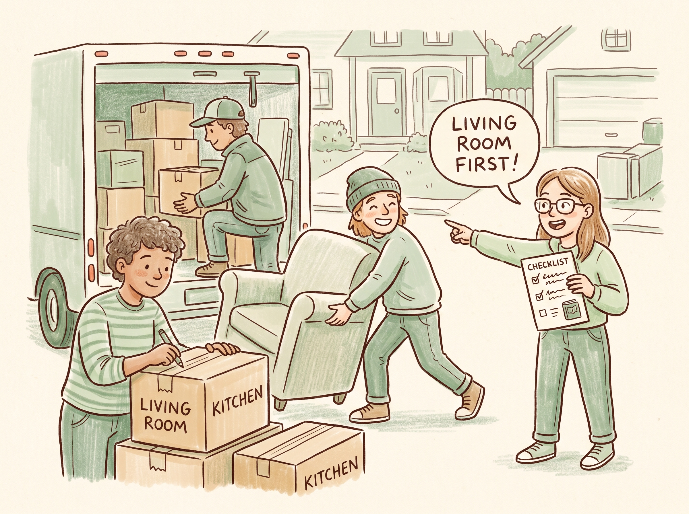
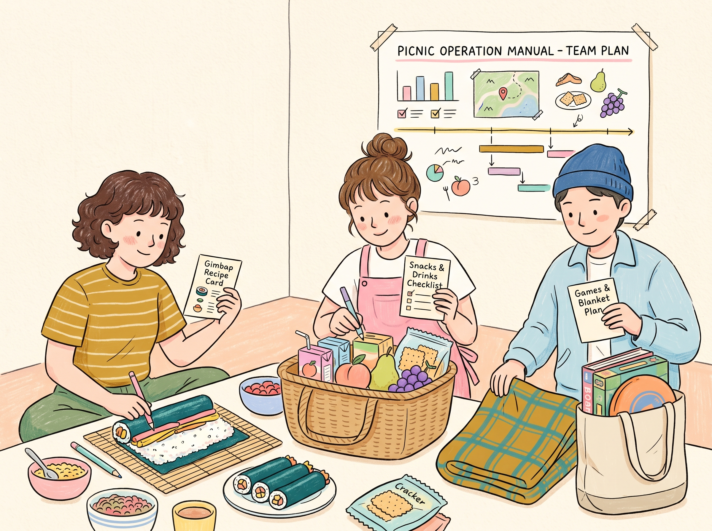
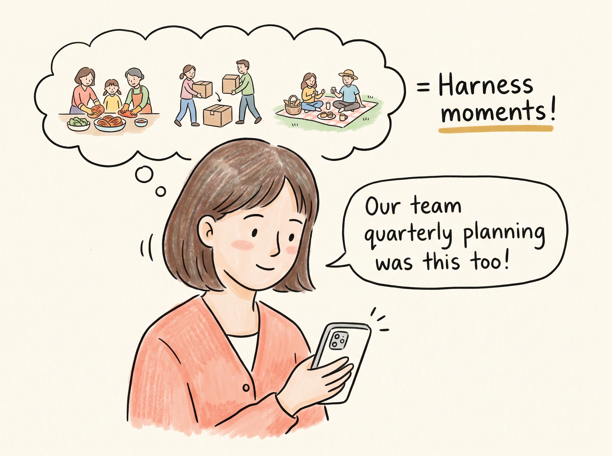
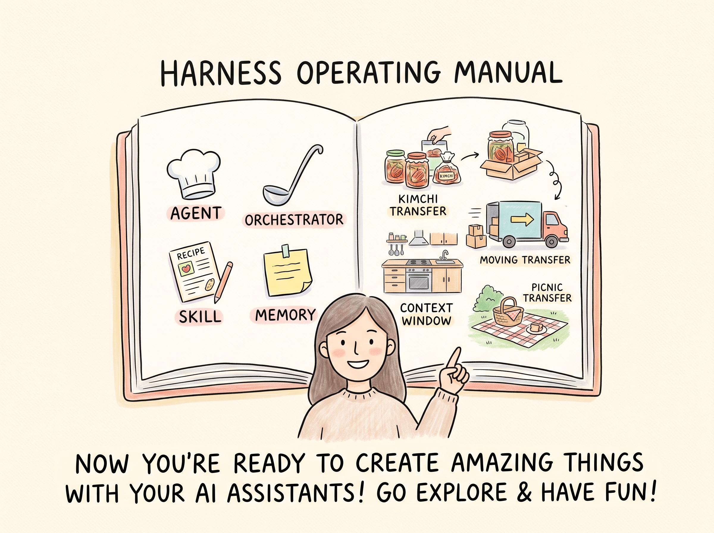

EP5-P1
김장 — 역할 분담

김장할 때 역할을 나누듯이...
[전이] 일상의 분업 = 하네스적 구조.
EP5-P2
이사 — 누가 뭘 할지

체크리스트 든 사람:거실 먼저, 그 다음 주방!
이사할 때 계획을 짜듯이...
[전이] 체크리스트·계획 = 하네스. 조율하는 사람 = 오케스트레이터.
EP5-P3
소풍 — 각자의 준비물

소풍 준비도 역할을 나누면 훨씬 잘됩니다.
[전이] 개인별 할 일 = 스킬, 전체 계획 = 하네스.
EP5-P4
Ana의 전이 — 나도 하네스적이었어!

Ana:우리 팀 분기 기획도 이거였어!
하네스는 특별한 기술이 아닙니다. 역할을 나누고 함께 일하는 방식이에요.
[전이 완료] 자기 일상에서 유사한 예를 들 수 있다. M14(나와 상관없다) 교정.
EP5-P5
마무리 — 시리즈 종합

Ana:이제 하네스가 뭔지 알겠죠?
하네스는 AI 팀의 운영 매뉴얼. 제품이 아니라 우리가 짜는 설계 방식입니다. 이해만으로도 충분해요.
[종합 정리] 핵심 정의 재확인 + '이해만으로 충분' 메시지.